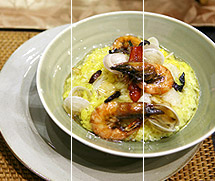

以創意料理、健康取向、優質服務為理念，走出傳統展現新的美食文化
home > 美食餐點大搜索
精緻美食細緻料理，走出傳統展現美食新文化
芋頭 搜尋結果50個，更多菜色請右方搜尋.... |
|  | Boile Taros With Green Onion 蔥燒香芋頭 $ 9,000 |
| Boile Taros With Green Onion 蔥燒香芋頭 $ 9,000 |
| Boile Taros With Green Onion 蔥燒香芋頭 $ 9,000 |
| Boile Taros With Green Onion 蔥燒香芋頭 $ 9,000 |
| Boile Taros With Green Onion 蔥燒香芋頭 $ 9,000 |
| 12345678910 |
copyrights 2010 by tang-bistro. all rights reserved.